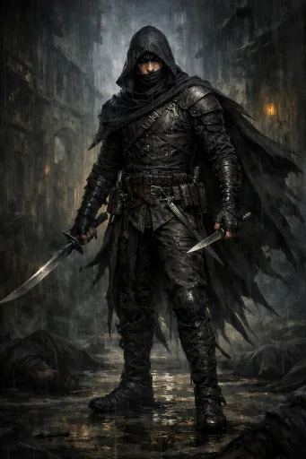
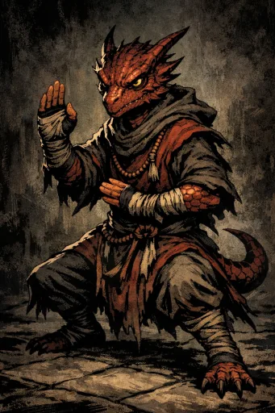

Campaign
Evidence of Absence
A house in Quipedal, an ancient artifact, a prison cellar, and a party that met under extremely bad circumstances.
Dungeon Master: MrTeeMan
Session archive: 1

A house in Quipedal, an ancient artifact, a prison cellar, and a party that met under extremely bad circumstances.



The party comes together around a blood-soaked house in the poor quarter of Quipedal, each drawn there by separate warnings, instincts, or visions.
At The Wall’s Edge, Azarth is quietly approached by a guild handler and pulled into a corner. One of their thieves, Riven, had been sent on a simple burglary job at a small house in the poor quarter. He returned — but not unchanged.
Riven came back shaking, drenched in sweat, barely coherent, and unwilling to go near the house again. When questioned, he muttered fragments of horror: “She split open… from the inside…” “Bones moving under the skin…” “Blood everywhere… but she stood up…”
The guild, unwilling to leave loose ends, orders Azarth to investigate the house, determine what happened, and recover anything dangerous or valuable.
Elsewhere in the poorer district of Quipedal, Kael Thorne is following work and possible bounty leads when he catches the unmistakable scent of fresh blood.
His tracking instincts pick out droplets of blood, disturbed dirt, scuffed stone, and tracks that are almost human, but not quite. The footprints do not lead into the house. They lead out of it, as though something left the scene after a kill — something learning how to walk like a person.
Daenalieth Althaea receives a disturbing dream. Suspended in silent darkness, he sees a small ancient artifact glowing with a soft, impossibly pure light. Looking at it, he feels not power, nor danger, but truth.
As he reaches for it, a shadow passes over the vision and the light flickers. Suddenly the dream changes: a small house, wooden floorboards, and blood — so much blood. A tall robed figure reaches down, lifts the artifact, and the light vanishes.
All three make their way separately to the same house. Azarth hangs back and observes from afar, spotting the bright pink-haired cleric Daenalieth and the towering ranger Kael.
Daenalieth casts Detect Magic outside and senses a radiating aura of illusion magic surrounding the house.
Kael then abandons subtlety completely by throwing his full body through a window and crashing into a table. Almost simultaneously, Daenalieth uses Thaumaturgy to dramatically fling open the unlocked front door.
Watching all this unfold in mounting disappointment, Azarth lets himself in properly through another window.
Azarth discovers a bedroom chest and prepares to pick it before the other two arrive. He hides under the bed, is immediately noticed, and the three agree to work together.
Inside the chest they find a diary, a key, clothing, and bedding. Kael keeps the diary, Azarth takes the key, and when the key fails to open the next door Azarth simply picks the lock.
Beyond lies a kitchen transformed into a nightmare: blood exploded across the room, walls painted red, and sinew hanging from the ceiling. While checking for traps, Azarth also discovers a secret hatch in the corner with blood seeping through the cracks.
Below the house, a red kobold named Zenko Shadowleaf hears the commotion and cries out for help. He has been trapped in a cell and unsuccessfully trying to fashion lockpicks out of human bones.
The party descends into the basement. Azarth discovers and disarms a lethal trap: a loose stone connected to a wire that would swing a spiked pole into anyone who triggered it.
When freed, Zenko explains he had been invited in by a woman who offered him food and drink before he blacked out. He awoke imprisoned while she studied him as a “rare specimen,” claiming she was saving him for something special because an important guest was coming.
He also heard captives screaming, multiple footsteps overhead, and some kind of wet explosive sound that shook the walls.
Farther in, the party discovers a grisly alcove containing a torture rack, a disembodied torso, two chests, and a magical dagger.
Daenalieth identifies the weapon as the Last Breath Dagger, which grants 1 temporary hit point after killing an enemy. Azarth, sensibly distrustful of cursed-looking murder tools found in underground torture rooms, declines to use it immediately.
The party also uncovers a Circlet of Steady Thought, two magical wedding rings inscribed with “our love” and “defies all,” a Scroll of Detect Magic, and 3 health potions.
The hanging bodies in the room suddenly animate, and the newly formed group is thrown into its first fight.
Daenalieth is struck down almost immediately by a brutal critical hit while trying to disengage. Kael cuts down a zombie and then rushes to the cleric’s side. Zenko smashes another undead attacker, while Azarth alternates between missed darts and precise blade work.
A ghoul joins the fight and bites Azarth, but Kael force-feeds Daenalieth a potion to bring him back from the brink. Zenko caves in a zombie’s skull, and Azarth finishes the ghoul with a well-placed sneak attack that drops it in a burst of gore.
The party survives its first battle together and stands victorious in the blood-soaked cellar.